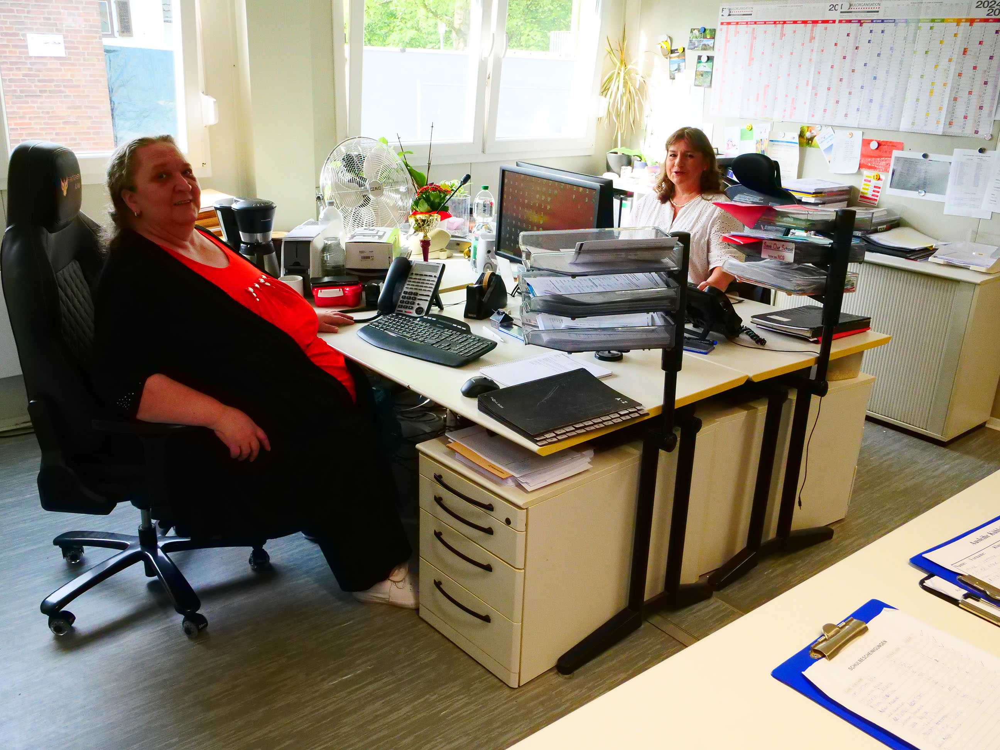

Unser Sekretariat wird von Frau Hamacher und Frau Pohlheim geleitet. Die beiden Sekretärinnen kümmern sich um die unten aufgelisteten Aufgaben.
Zahlreiche Formulare finden Sie auch in unserem Online-Sekretariat zum Download.
Mo–Do: 07:30 – 16:00
Fr: 07:30 – 13:30
📧 sekretariat@ncg-online.de
📞 Tel.: 02202 96997 - 0